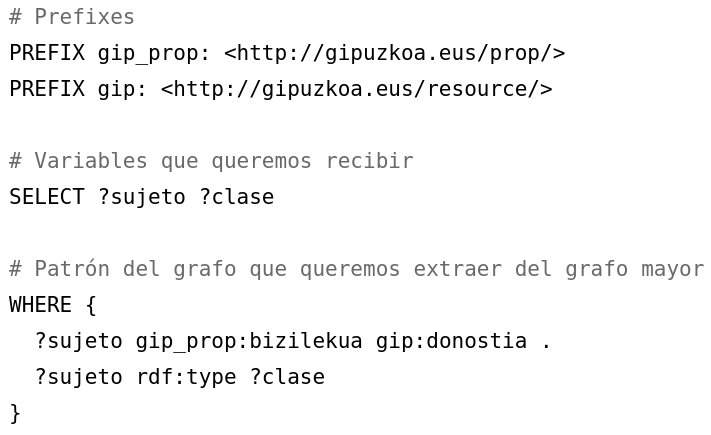
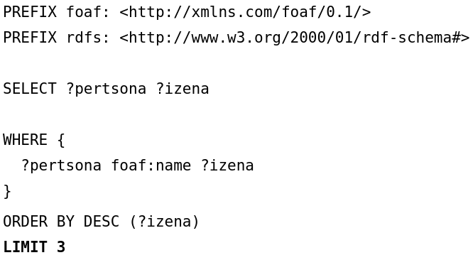
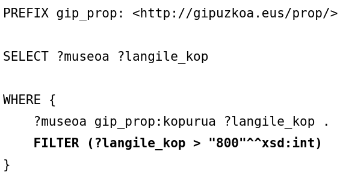
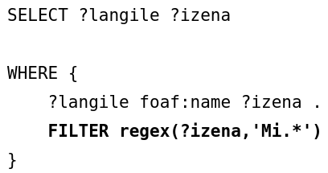
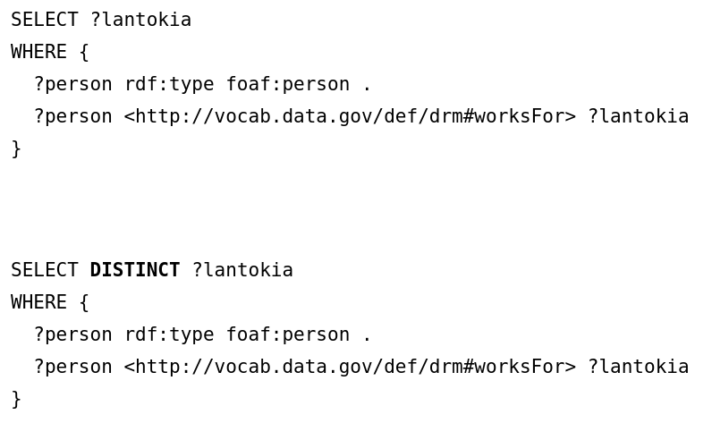
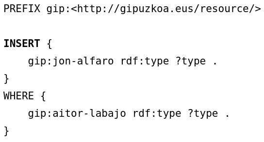
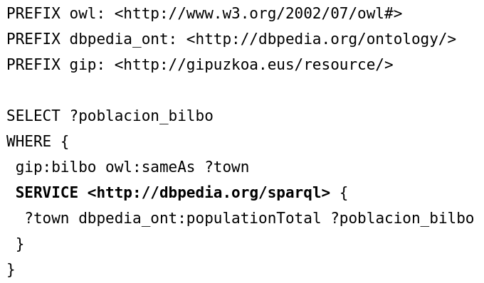

SPARQL
Mikel Egaña Aranguren
SPARQL
SPARQL: SPARQL Protocol and RDF Query Language
Estándar oficial del W3C para:
- Hacer consultas sobre grafos RDF
- Ejecutar esas consultas sobre HTTP contra un SPARQL endpoint (Incluyendo consultas federadas)
SPARQL

SPARQL

Estructura de la consulta
(Subir museoak.rdf a GraphDB)
(1.rq)

Estructura de la consulta
(2.rq)

Ordenar resultados
(6.rq)

Limitar resultados
(7.rq)

Filtrar resultados
(10.rq)

Filtrar resultados
(11.rq)

Filtrar resultados
Lógica: !, &&, ||
Calculos: +, -, *, /
Comparaciones: =, !=, >,<
Filtrar resultados
Tests SPARQL: isURI, isBlank, isLiteral, bound
Acceder a datos: str, lang, datatype
Más: sameTerm, langMatches, regex, ...
Evitar duplicados
(12.rq)

Describe
DESCRIBE <http://gipuzkoa.eus/resource/mikel-aranguren>
Delete data
DELETE DATA {
rdf:type foaf:person
}
DESCRIBE <http://gipuzkoa.eus/resource/aitor-labajo>
Delete
DELETE {?person rdf:type foaf:person}
WHERE {?person foaf:name ?name}
SELECT * WHERE {
?person rdf:type foaf:person
}
INSERT DATA
PREFIX gip:<http://gipuzkoa.eus/resource/>
INSERT DATA {
gip:aitor-labajo rdf:type gip:hiritar
}
DESCRIBE <http://gipuzkoa.eus/resource/aitor-labajo>
INSERT
(15.rq)

DESCRIBE <http://gipuzkoa.eus/resource/jon-alfaro>
Consultas federadas
(16.rq)

GRAFOS
Grafo: conjunto de triples
El conjunto entero se identificada con una URI (diferente de la de los datos)
Todas las Triple Stores tienen un Default Graph
GRAFOS

GRAFOS
Los grafos son muy utiles para añadir datos sobre los datos (metadatos): ej. procedencia, autoria, fecha de generación
(entre otras cosas)
GRAFOS